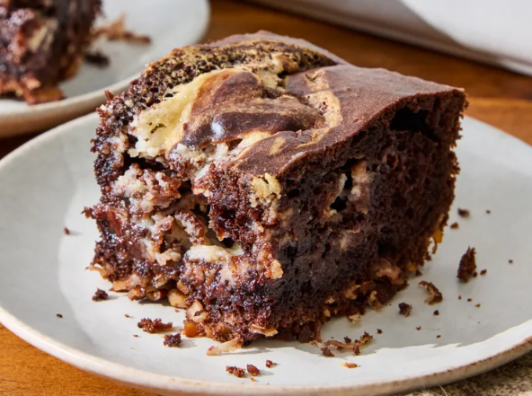

Gâteau au chocolat allemand
Ce gâteau au chocolat allemand a le même goût que le gâteau traditionnel, mais la pâte, la garniture et le nappage sont cuits ensemble. On y retrouve les saveurs de noix de pécan et de noix de coco attendues, et le tourbillon de fromage frais apporte la saveur du glaçage. Il est agréablement moelleux, avec des morceaux croquants : un vrai délice pour les amateurs de chocolat !
Par John Doe Publié le 15 Septembre 2025

Description
Le gâteau au chocolat allemand est un dessert classique qui se compose de plusieurs couches de gâteau au chocolat moelleux, intercalées avec une garniture crémeuse à base de beurre, de sucre et de cacao. Le tout est recouvert d'un glaçage au chocolat riche et lisse. Ce gâteau est souvent décoré avec des copeaux de chocolat ou des noix pour ajouter une touche de croquant.
Ingrédients
- 2 tasses de farine tout usage
- 2 tasses de sucre
- 3/4 tasse de cacao en poudre non sucré
- 1 1/2 cuillères à café de levure chimique
- 1 1/2 cuillères à café de bicarbonate de soude
- 1 cuillère à café de sel
- 2 œufs
- 1 tasse de lait entier
- 1/2 tasse d'huile végétale
- 2 cuillères à café d'extrait de vanille
- 1 tasse d'eau bouillante
Instructions
- Préchauffez votre four à 175 °C (350 °F). Graissez et farinez deux moules à gâteau ronds de 23 cm (9 pouces) de diamètre.
- Dans un grand bol, mélangez la farine, le sucre, le cacao en poudre, la levure chimique, le bicarbonate de soude et le sel. Ajoutez les œufs, le lait, l'huile végétale et l'extrait de vanille. Battez à vitesse moyenne pendant 2 minutes. Incorporez lentement l'eau bouillante (la pâte sera très liquide). Versez la pâte uniformément dans les moules préparés.
- Faites cuire au four pendant 30 à 35 minutes, ou jusqu'à ce qu'un cure-dent inséré au centre en ressorte propre. Laissez les gâteaux refroidir dans les moules pendant 10 minutes, puis démoulez-les sur une grille pour les laisser refroidir complètement.
- Une fois les gâteaux refroidis, préparez la garniture en mélangeant le beurre, le sucre et le cacao en poudre jusqu'à obtenir une consistance crémeuse. Étalez la garniture sur une des couches de gâteau, puis placez la deuxième couche par-dessus. Recouvrez le gâteau avec le glaçage au chocolat et décorez avec des copeaux de chocolat ou des noix, si désiré.
- Réfrigérez le gâteau pendant au moins 30 minutes avant de servir pour permettre à la garniture de se raffermir. Dégustez et savourez ce délicieux gâteau au chocolat allemand !
Conseil de recette
Pour un gâteau encore plus moelleux, vous pouvez ajouter une cuillère à soupe de vinaigre blanc à la pâte. Le vinaigre réagit avec le bicarbonate de soude pour créer des bulles d'air, ce qui rend le gâteau plus léger et plus aéré.